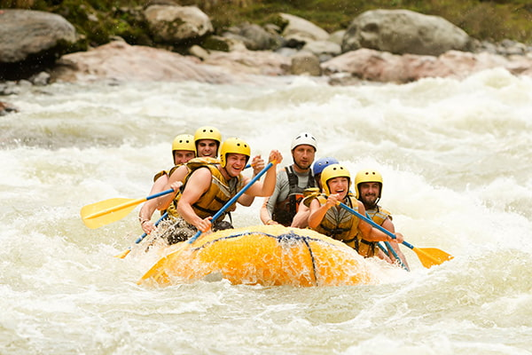
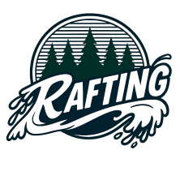

Nossa missão é proporcionar experiências inesquecíveis, seguras e emocionantes nas corredeiras, conectando aventureiros à natureza com muita adrenalina e diversão.



Nossa missão é proporcionar experiências inesquecíveis, seguras e emocionantes nas corredeiras, conectando aventureiros à natureza com muita adrenalina e diversão.
Fundada por entusiastas dos esportes de aventura, a Aventura Rafting & Cia nasceu com o propósito de transformar corredeiras selvagens em memórias inesquecíveis. Ao longo dos anos, crescemos mantendo o rigoroso compromisso com a segurança dos nossos clientes e a preservação ambiental dos rios onde operamos.